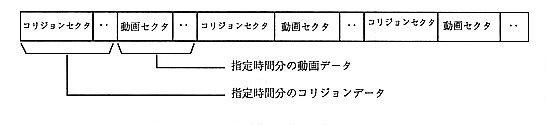

interleave definition file is included in the script file created by the user.
Based on this script file, the virtual CD creates a CD-ROM image. An interleaved file is an alternating arrangement of collision data and video data for the time specified by the user.
The following figure shows how to interleave video files and collision files.

Collision sectors and video sectors are placed in sectors with no gaps every 2048 bytes or 2324 bytes.